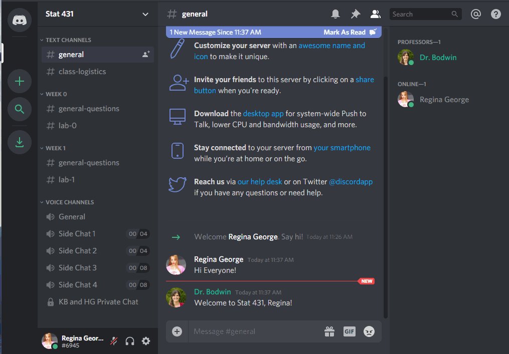
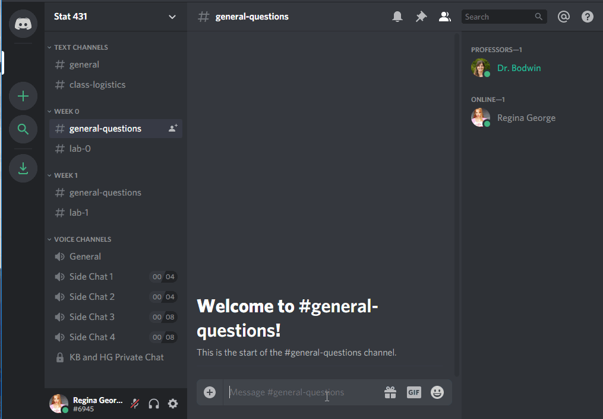
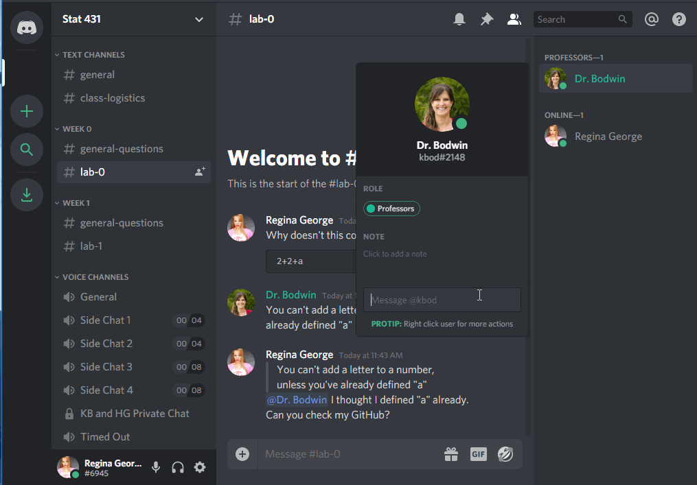

Using Discord 101
1 What is Discord?
Discord is a platform for text chatting, voice chatting, and screen sharing. We will be using Discord as a group “workspace” for this class.
Join the Stat 541 Server to start experimenting with the interface. When you join the server, you will be given some suggestions to get started.

We recommend you click through these - and in particular, it is probably a good idea to download the desktop version of Discord.
2 Setting up your account
Verify your email
To use this Discord server, you must have a verified email.
Nobody (including your professors) will be able to see this email, and it does not have to be your Cal Poly email. This is simply to keep the server from being overrun by temporary accounts.
Create your identity
The first thing you should do is decide what name and picture you would like to use.

We would like to strongly encourage you to use your real name and picture, so that we can get to know you. However, if you prefer to remain anonymous, you are free to do so.

(Please do not be like Regina and use the name of another student, however! This kind of impersonation will result in a permanent ban from the server.)
Decide about privacy and notifications
The default settings on the channel are probably just fine for you. Feel free to make any changes that work for you, though.
You can change your message notifications:

You can edit your privacy settings, although most things are already private:

Connect other apps
You can connect other apps to Discord, either for productivity or just for fun.

Dr. Bodwin has connected her Spotify, so you can listen along with her music and/or judge her taste.
3 Using the Channels
The server is made up of many channels. Some are text chatrooms, while some are “Voice Channels” that connect you via audio to everyone else in the channel.
Text Channels
Use the #general channel for anything and everything:

If your question is about course logistics, rather than the material itself, consider using the #class-logistics channel:

You can use the specific weekly channels to ask questions about the material…

… or the specific lab assignment.

Notice that you can use tick marks (```), like in R Markdown, to make your code appear in a formatted code box.
Voice Channels
To join a voice channel, simply click it! Make sure you are careful about when you are muted or unmuted.

The extra “Side Chat” channels are limited to 4 or 8 people, if you would like to start an impromptu study conversation without being heard by the professors and/or the rest of the class. (We’ll only drop in if you invite us!)
Voice channels can also be used for people to “Go Live”, and share their screen with everyone else.

While this will usually be something professors use to demonstrate code, you can go live, too! But you may need to download the desktop version of Discord to do so.
Private messages
It is also easy to send private messages, to your professor(s) or to each other. These private messages can also easily be used to launch a private video chat and/or screen sharing.

4 Creating your own server
Last but not least - if you have an established study group you like to work with, and you want to use Discord to communicate without the distraction or invasion of the rest of the class, feel free to create your very own server! You can easily hop between servers during work parties, to ask each other questions or just to take a break and chat about life.